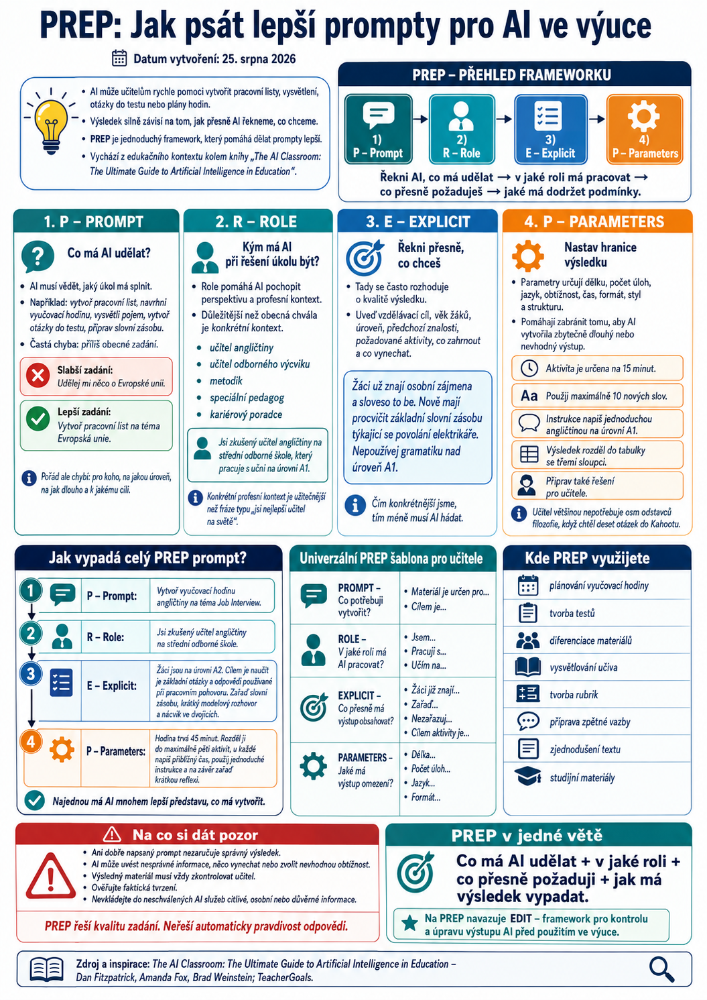

Umělá inteligence dokáže učiteli během několika sekund připravit návrh pracovního listu, vysvětlení učiva, otázky do testu nebo plán celé vyučovací hodiny. Výsledek ale velmi závisí na tom, jak přesně AI řekneme, co po ní chceme.
Jednou z jednoduchých metod, která pomáhá zadání zpřesnit, je framework PREP.
Vznikl v souvislosti s knihou The AI Classroom: The Ultimate Guide to Artificial Intelligence in Education autorů Dana Fitzpatricka, Amandy Fox a Brada Weinsteina. Autoři jej vytvořili jako jednoduchou pomůcku pro učitele pracující s generativní AI. Oficiální materiály ke knize jej stále nabízejí jako základ pro tvorbu kvalitnějších promptů.
Dobrou zprávou je, že PREP není závislý na jednom konkrétním nástroji. Stejný princip lze použít například v ChatGPT, Gemini, Copilotu i dalších generativních AI nástrojích.

Co znamená PREP?
Zkratka PREP představuje čtyři části dobrého zadání:
- P – Prompt
- R – Role
- E – Explicit
- P – Parameters
Řekni AI, co má udělat → v jaké roli má pracovat → co přesně požaduješ → jaké má dodržet podmínky.
Původní framework definuje jednotlivé kroky jako zadání úkolu, přidělení role, explicitní instrukce a stanovení parametrů výsledku.
1. P – PROMPT
Co má AI udělat?
První krok je nejjednodušší.
AI musí vědět, jaký úkol má splnit.
Například:
- vytvoř pracovní list,
- navrhni vyučovací hodinu,
- vysvětli pojem,
- vytvoř otázky do testu,
- připrav slovní zásobu,
- navrhni aktivitu do dvojic,
- vytvoř rubriku pro hodnocení,
- zjednoduš tento text.
Častou chybou je příliš obecné zadání.
Například:
Slabší zadání:
Udělej mi něco o Evropské unii.
AI sice něco vytvoří, ale musí sama odhadovat, co vlastně potřebujeme.
Lepší je například:
Vytvoř pracovní list na téma Evropská unie.
Ještě pořád ale nevíme, pro koho, na jakou úroveň, na jak dlouho ani k jakému cíli.
Proto přicházejí další části PREP.
2. R – ROLE
Kým má AI při řešení úkolu být?
Ve druhém kroku přidělíme AI roli.
Například:
Jsi zkušený učitel občanské nauky na střední odborné škole.
Nebo:
Jsi učitel angličtiny, který pracuje se žáky na úrovni A1.
Role pomáhá AI pochopit, z jaké perspektivy má k úkolu přistupovat.
Můžeme použít například role:
- učitel angličtiny,
- učitel odborného výcviku,
- metodik,
- speciální pedagog,
- jazykový lektor,
- školní psycholog,
- kariérový poradce,
- examinátor,
- autor pracovních listů,
- odborník na didaktiku určitého předmětu.
Role ale není kouzelné zaklínadlo. Napsat pouze „jsi nejlepší učitel na světě“ obvykle mnoho nepřinese.
Důležitější je konkrétní profesní kontext.
Například:
Jsi zkušený učitel angličtiny na střední odborné škole, který pracuje s učni na úrovni A1.
To už AI poskytuje velmi užitečný kontext.
3. E – EXPLICIT
Řekni přesně, co chceš
Tady se často rozhoduje o kvalitě výsledku.
Nestačí říct:
Vytvoř pracovní list.
Můžeme například doplnit:
Pracovní list má obsahovat krátké vysvětlení, osm úloh od jednoduchých ke složitějším, jednu aktivitu ve dvojici a závěrečnou kontrolu porozumění.
Čím konkrétnější jsme, tím méně musí AI hádat.
Můžeme uvést například:
- vzdělávací cíl,
- věk žáků,
- jejich úroveň,
- předchozí znalosti,
- požadované aktivity,
- témata, která mají být zahrnuta,
- témata, která naopak zahrnuta být nemají,
- způsob práce žáků,
- typ výsledného materiálu.
Například:
Žáci už znají osobní zájmena a sloveso to be. Nově mají procvičit základní slovní zásobu týkající se povolání elektrikáře. Nepoužívej gramatiku nad úroveň A1.
Taková informace může kvalitu výsledku změnit velmi výrazně.
4. P – PARAMETERS
Nastav hranice výsledku
Poslední část frameworku říká AI, jak má výsledný výstup vypadat.
Parametry mohou určovat například:
- délku,
- počet úloh,
- jazyk,
- obtížnost,
- čas,
- formát,
- styl,
- strukturu,
- počet variant,
- způsob prezentace výsledku.
Například:
Aktivita je určena na 15 minut.
Použij maximálně 10 nových slov.
Instrukce pro žáky napiš jednoduchou angličtinou na úrovni A1.
Výsledek rozděl do tabulky se třemi sloupci.
Připrav také řešení pro učitele.
Parametry jsou užitečné hlavně proto, že AI jinak často vytvoří mnohem více textu, než učitel skutečně potřebuje.
A učitel opravdu nepotřebuje osm odstavců filozofie ve chvíli, kdy chtěl deset otázek do Kahootu.
Jak vypadá celý PREP prompt?
Podívejme se na jednoduchý příklad.
Původní zadání
AI musí odhadovat téměř všechno.
Neví:
- věk studentů,
- úroveň angličtiny,
- typ školy,
- délku hodiny,
- vzdělávací cíl,
- požadované aktivity.
Stejné zadání pomocí PREP
Vytvoř vyučovací hodinu angličtiny na téma Job Interview.
R – Role
Jsi zkušený učitel angličtiny na střední odborné škole.
E – Explicit
Žáci jsou na úrovni A2. Cílem je naučit je základní otázky a odpovědi používané při pracovním pohovoru. Zařaď práci se slovní zásobou, krátký modelový rozhovor a praktický nácvik pohovoru ve dvojicích.
P – Parameters
Hodina trvá 45 minut. Rozděl ji do maximálně pěti aktivit a u každé napiš přibližný čas. Instrukce pro žáky mají být jednoduché. Na závěr zařaď krátkou reflexi.
Najednou má AI mnohem lepší představu, co má vytvořit.
Univerzální PREP šablona pro učitele
Nemusíme pokaždé celý prompt vymýšlet znovu.
Stačí si uložit jednoduchou kostru:
Co potřebuji vytvořit?
Vytvoř / navrhni / vysvětli / uprav / připrav…
ROLE
V jaké roli má AI pracovat?
Jsi zkušený učitel / metodik / odborník na…
EXPLICIT
Co přesně má výstup obsahovat?
Materiál je určen pro…
Cílem je…
Žáci již znají…
Zařaď…
Nezařazuj…
PARAMETERS
Jaké má výstup omezení?
Délka…
Čas…
Počet úloh…
Jazyk…
Úroveň…
Formát…
Praktický příklad: pracovní list
Bez PREP
S PREP
R – Role: Jsi učitel angličtiny na střední odborné škole, který pracuje s žáky na úrovni A2.
E – Explicit: Žáci již znají tvorbu kladných vět a základní nepravidelná slovesa. Zaměř se na procvičení kladných vět, záporu a otázek. Použij situace z běžného života mladých lidí.
P – Parameters: Pracovní list je určen přibližně na 20 minut. Obsahuje čtyři typy úloh a maximálně 20 položek. Na konci vytvoř řešení pro učitele.
To už je zadání, se kterým se dá velmi dobře pracovat.
Praktický příklad: občanská nauka
R: Jsi učitel občanské nauky na střední odborné škole.
E: Žáci mají pochopit rozdíl mezi informací, názorem, manipulací a dezinformací. Vytvoř několik krátkých modelových příspěvků ze sociálních sítí a nech žáky rozhodovat, jak by jejich důvěryhodnost ověřili.
P: Aktivita má trvat 20 minut. Je určena pro žáky ve věku 16–17 let. Použij současný a srozumitelný jazyk. Nevytvářej skutečné nepravdivé informace o konkrétních žijících osobách.
Praktický příklad: diferenciace
PREP se hodí také tehdy, když potřebujeme jeden materiál upravit pro různé skupiny žáků.
Například:
R: Jsi zkušený pedagog se znalostí diferenciace výuky.
E: Zachovej stejné vzdělávací cíle, ale zkrať instrukce, rozděl složité úkoly do menších kroků a přidej jeden vypracovaný příklad.
P: Neměň odborné termíny, které se mají žáci naučit. Výsledný materiál nesmí být delší než původní verze.
PREP není jen pro tvorbu materiálů
Stejný princip můžeme použít například při:
- plánování vyučovací hodiny,
- tvorbě testů,
- přípravě otázek,
- diferenciaci materiálů,
- tvorbě příkladů,
- vysvětlování obtížného učiva,
- přípravě projektů,
- návrhu aktivit,
- tvorbě hodnoticích rubrik,
- přípravě zpětné vazby,
- převodu textu na jinou úroveň obtížnosti,
- tvorbě studijních materiálů.
PREP se dnes objevuje i v dalších vzdělávacích doporučeních pro práci s generativní AI, což ukazuje, že jednoduchá původní myšlenka má praktickou hodnotu i několik let po svém vzniku.
Nemusíme psát „dokonalý prompt“
Tady je ale důležitá věc.
PREP není formulář, který musíme pokaždé otrocky vyplnit.
Současné AI nástroje zvládají běžnou konverzaci mnohem lépe než první generace chatbotů. Někdy tedy úplně stačí napsat:
Potřebuji 15minutovou aktivitu pro druháky na téma pracovní pohovor. Jsou přibližně A2 a chci, aby hlavně mluvili.
A pak výsledek postupně zpřesňovat.
PREP je proto nejlepší chápat jako kontrolní seznam:
Řekla jsem AI:
- co chci?
- pro koho to chci?
- v jakém kontextu pracujeme?
- co musí výstup obsahovat?
- jaká jsou omezení?
Pokud ano, máme většinou velmi slušný základ.
Na co si dát pozor
Ani perfektně napsaný prompt nezaručuje správný výsledek.
Generativní AI může:
- uvést nesprávné informace,
- něco důležitého vynechat,
- vytvořit nevhodnou úroveň obtížnosti,
- vymyslet neexistující zdroj,
- vytvořit příliš obecnou aktivitu,
- obsahovat zkreslení nebo stereotyp.
Proto by výsledný materiál měl vždy projít kontrolou učitele.
Současná doporučení pro práci s generativní AI také zdůrazňují potřebu ověřovat faktická tvrzení a nevkládat do neschválených AI služeb citlivé, osobní nebo důvěrné informace.
PREP tedy řeší kvalitu zadání.
Neřeší automaticky kvalitu a pravdivost odpovědi.
A právě proto na PREP navazuje druhý velmi užitečný framework – EDIT.
PREP v jedné větě
Pokud si nechceme pamatovat celou metodiku, stačí si zapamatovat:
To je celý PREP.
Jednoduchý princip, ale při každodenní práci učitele dokáže ušetřit překvapivě mnoho pokusů typu:
„Ne, takhle jsem to nemyslela.“
Co následuje?
Samotný dobrý prompt nestačí. AI může i při perfektním zadání vytvořit chybný nebo nevhodný výsledek.
Proto se v dalším článku podíváme na druhou polovinu původního systému The AI Classroom:
EDIT – jak výstup AI zkontrolovat, ověřit a upravit předtím, než jej použijeme ve výuce.
Zdroj a další informace
Framework PREP pochází z materiálů spojených s knihou The AI Classroom: The Ultimate Guide to Artificial Intelligence in Education autorů Dana Fitzpatricka, Amandy Fox a Brada Weinsteina. TeacherGoals nabízí k publikaci také bezplatné doprovodné materiály, včetně Prompt Engineer Frameworku, PREP & EDIT materiálů a dalších zdrojů pro učitele.